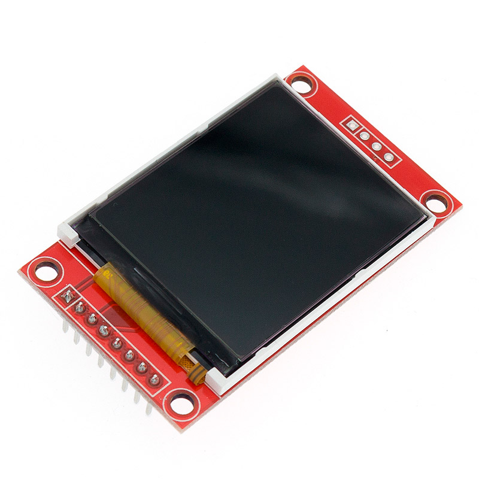

Цветной TFT дисплей 1.8′ SPI 128×160 px на базе ST7735
------------------------------------------------------------------------------------------------------------------------------
Жидкокристаллический дисплей с диагональю 1.8 дюйма, собран на контроллере ST7735. Обладает разрешением 128×160 px и позволяет выводить до 262.144 оттенков. Имеет SPI интерфейс и встроенный стабилизатор на 3.3В, поэтому может работать как с 3.3, так и с 5В.
-----------------------------------------------------------------------------------------------------------------------------------------

----------------------------------------------------------------------------------------------------------------------------------
SPI TFT ДИСПЛЕЙ 128×160 PX ДЛЯ ARDUINO
Дисплей может отображать качественную картинку, позволяя выводить 18 бит цвета, то есть до 262.144 оттенков. За обработку данный отвечает контроллер ST7735R. Поддерживает 3 режима цветового пространства: RGB444, RGB565, RGB888. Подсветка осуществляется при помощи двух LED диодов с поддержкой ШИМ, имеется возможность программного управления мощностью.
Для обмена данными дисплей использует SPI протокол, который позволяет подключить дисплей практически к любому микроконтроллеру. Для подключения задействуются 4 или 5 контактов.
Напряжение питания составляет 3.3В, для работы с контроллерами Arduino предусмотрен стабилизатор напряжения. Шина передачи данных толерантна к 5В логике.
Дополнительно на модуле дисплея установлен разъем для SD-карты, используемой для хранения и загрузки изображений на дисплей. Выводы для подключения SD карты напрямую к микроконтроллеру выведены отдельно, на противоположную от основных контактов сторону.
ОСНОВНЫЕ ДОСТОИНСТВА
ПРИМЕРЫ ИСПОЛЬЗОВАНИЯ
КОМПЛЕКТАЦИЯ
Внимание! При приемке все дисплеи проходят тщательную ручную проверку на наличие видимых дефектов. После получения и проверки дисплейных модулей претензии к наличию видимых дефектов не принимаются (подробнее в разделе “гарантии”)
ПОДКЛЮЧЕНИЕ И БИБЛИОТЕКИ
Модуль совместим с любыми микроконтроллерами, включая Arduino.
Подключается к платформе через SPI интерфейс. Для работы требуются библиотеки Adafruit_ST7735 и Adafruit_GFX.
Схема и пример кода подключения дисплея к Arduino Uno доступна по ссылке.